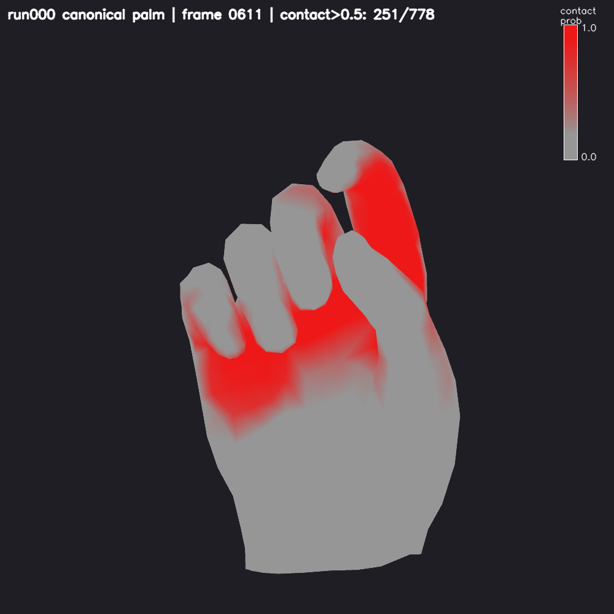
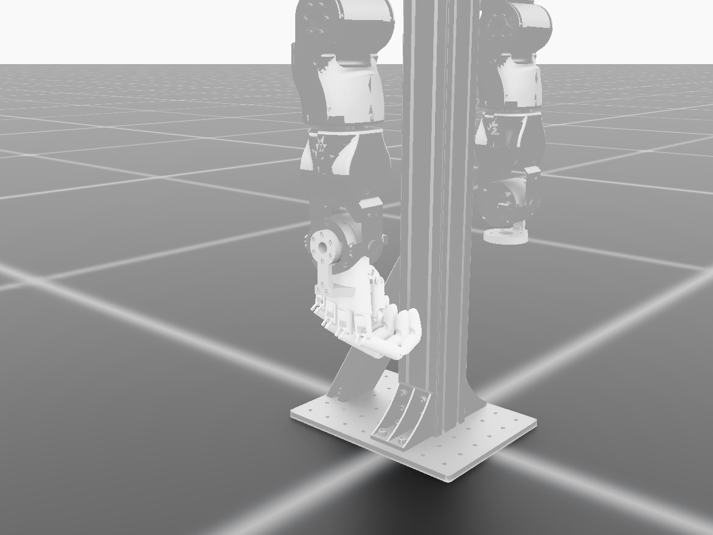
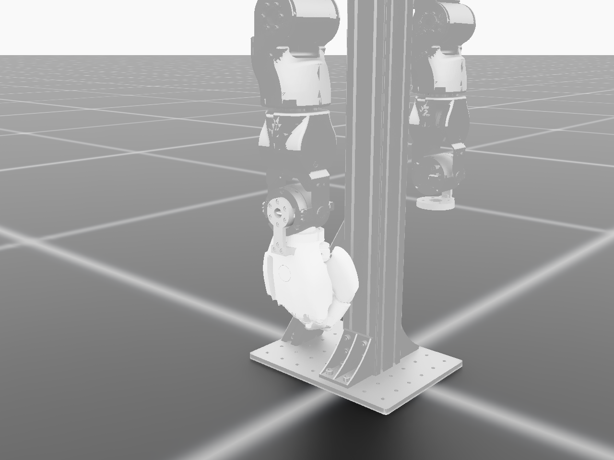
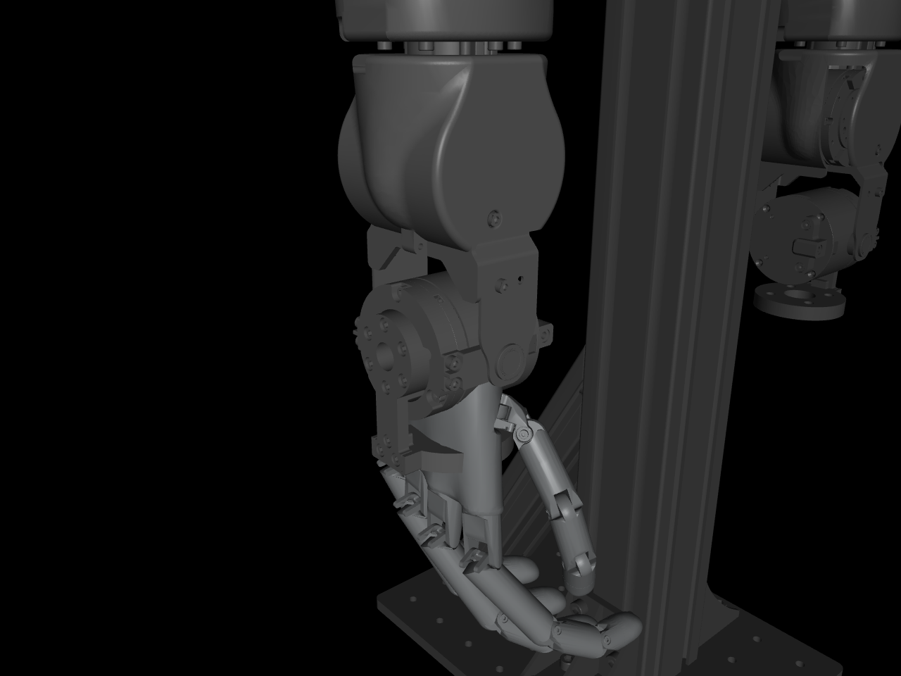

Dexterous Point Policy learns multi-finger manipulation from human video with zero robot demonstrations. After NeurIPS 2026 (scores 2 / 4 / 2), the ICLR resubmission rebuilds the story around exactly what reviewers attacked: the hand-crafted contact mechanism, the limited dexterity of a 6-DOF hand, and the sub-cm errors left by learning from humans.
The paper's headline claim — “+71.3 points from contact prediction” — was the gap between full DPP and a point-only baseline that differed in three ways at once. All three reviewers called this out; there was no isolating ablation. The resubmission answers each attack head-on rather than defending the old framing.
Contact-attribution confound was the unanimous killer (all three reviews, W1). The two items shipped so far — contact automation and higher-DOF sim — are shown below.
Instead of labeling fingertip contact by hand, a HaWoR-based tactile model predicts a contact probability for every one of the 778 MANO vertices, straight from monocular video. Where the old rebuttal used a geometric proximity rule, the learned model is far closer to human labels — answering the reviewers' “why not proximity?” with a number.
| vs. manual GT | micro-F1 | thumb | index | middle | ring | pinky |
|---|---|---|---|---|---|---|
| Learned tactile | 0.70 | 0.84 | 0.85 | 0.77 | 0.51 | 0.15 |
| Proximity rule (τ=40mm) | 0.33 | 0.47 | 0.42 | 0.21 | 0.12 | 0.05 |
pnp500, 479 episodes / 69k frames · agreement 83%. Thumb / index / middle are reliable; pinky is the weak finger (recall 0.08). The learned model beats the heuristic on every finger and 2× overall.

The Inspire hand has ~6 actuated DOF — functionally a wrist plus five grippers. To support genuine dexterity (finger-gaiting, in-hand), the OpenArm rig now runs two high-DOF hands in Isaac Lab, hand-only swaps that keep the arm untouched: Wuji (20 DOF) and Sharpa (22 DOF). Both load, actuate, and are integrated as first-class robot configs.



openarm_right_link7
following a proven template, validated on CPU before the GPU asset bake.Hand subtree grafted under the arm wrist; compiles in MuJoCo.
Isaac importer (extension enabled at runtime); per-file mesh collisions and a duplicate articulation-root both fixed.
Loads as one articulation, fingers reach commanded curl. Wuji ✓ · Sharpa ✓.
OPENARM_WUJI_CFG / OPENARM_SHARPA_CFG — runtime-validated via the package import path.
Reusable recipe & every fix documented in SIM-HANDSWAP-PLAN.md.
Sharpa's wrist-mount orientation still wants a small tune.
Learned tactile model verified (F1 0.70 ≫ 0.33) and visualized; contact labels no longer hand-made.
Base policy from human video, then residual RL on the real robot — the “true real-robot learning from human demos” argument. We keep the story consistent, not the implementation.
OpenArm + Wuji (20 DOF) and + Sharpa (22 DOF) built, smoke-tested, config-integrated in Isaac Lab.
Pick&Place · long-horizon high-precision BMW · a finger-gaiting task only a high-DOF hand can do. Task-env design (scene / action / RL) is the next scoping step.
Keep the 6-point interface and let residual RL learn the extra DOF (recommended), or extend the abstraction itself?
Real-robot residual (headline) vs. sim-transfer proving the no-gap claim — likely both.
Which dexterous task to target, and how to wire the sim scene / action term / RL around it.
Adjust the wrist-flange orientation quaternion for a natural Sharpa grasp pose.